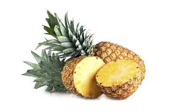
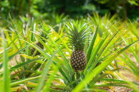

Pineapple comes from South America and was introduced to Europe in the 1600s. They grow on shrubs and when multiple flowers from an unpollinated plant fuse, they form a fruit. Pineapple is often used on pizza, on a stick as a kabob, on yams with a cherry in the middle, as an addition to a fruit salad, , or Hawaiian pizza.
Pineapple belongs on pizza if you disagree then your opinion is factually incorrect because that's how opinions work. Apparently, the birth of the Hawaiian pizza with pineapple on it was in 1962 in the restaurant of Greek born Canadian Sam Panopaulos. He put pineapple and canned ham on his pizza and called it "Hawaiian" because that was the brand of pineapple he used.
